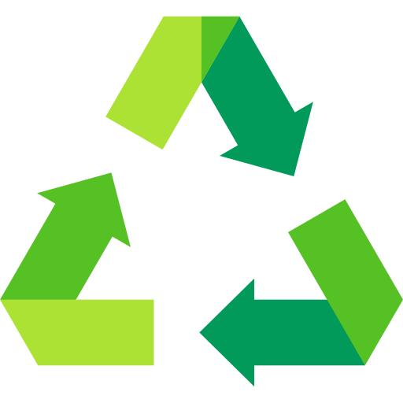
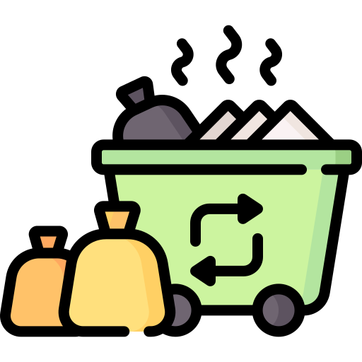
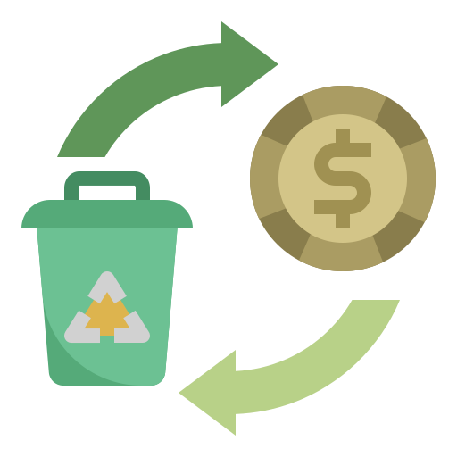
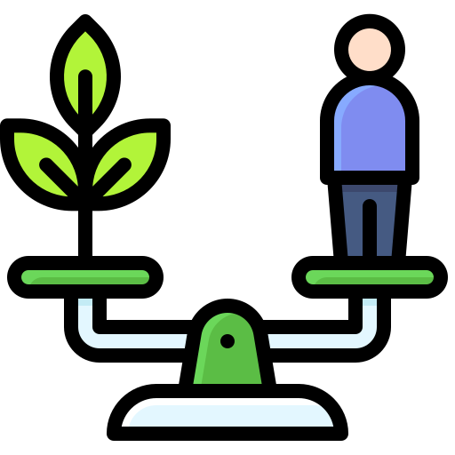

Fatos sobre Reciclagem

Reciclagem
Reciclamos mais de 2 toneladas de materiais por mês, transformando resíduos em novas oportunidades.
Economia de Energia
Ao reciclar, economizamos até 75% de energia comparado à produção de materiais virgens.
Preservação Ambiental
A reciclagem ajuda a preservar florestas e reduzir a emissão de gases poluentes.
Posts do Instagram
Vídeos Educativos
Dados e Conscientização
Embora o potencial da economia circular seja enorme, apenas uma pequena fração dos resíduos gerados no Brasil é reciclada. Aumentar a conscientização é fundamental para transformar essa realidade.
-  Reciclagem no Brasil: Apenas 4% dos resíduos são reciclados.
-  A economia circular pode gerar até R$1 trilhão em novos negócios.
-  Mais de 800 mil brasileiros dependem da reciclagem para seu sustento.